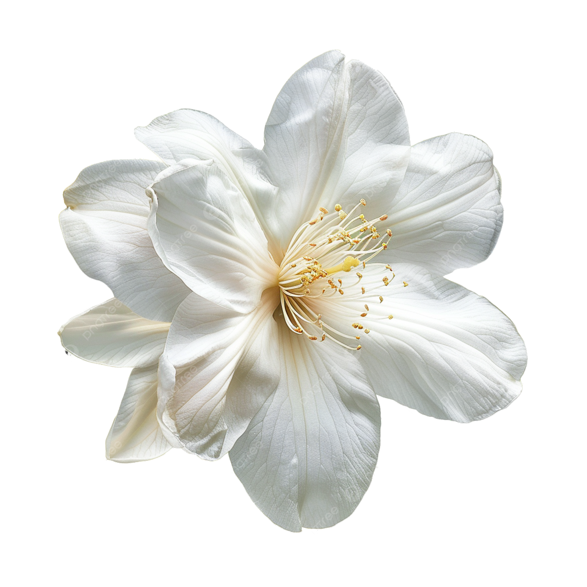
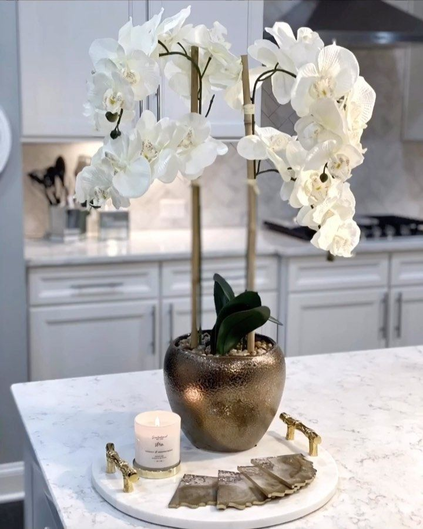

Welcome To Our
Nature's
Nature's
Beauty



Flowers are the reproductive structures found in flowering plants. They are usually brightly colored and fragrant, attracting pollinators such as bees, birds, and butterflies. Flowers are not only beautiful to look at but also play a crucial role in the reproduction of plants.
Known for their classic beauty and fragrance, roses come in various colors, each symbolizing different emotions such as love, passion, and friendship.

Tulips are celebrated for their simple yet elegant shape and vibrant colors. They represent perfect love and the arrival of spring.

Known for its large, sunny yellow petals and seeds, the sunflower is often associated with warmth and positivity. It follows the sun’s movement throughout the day.

Lilies are admired for their large, fragrant blooms and come in many varieties. They symbolize purity and refined beauty.

Exotic and diverse, orchids are known for their intricate and vibrant blooms. They are one of the largest plant families in the world.
Simple yet charming, daisies have a cheerful appearance with white petals and a yellow center. They symbolize innocence and purity.
Flowers play a crucial role in our ecosystems by providing essential nourishment for pollinators like bees and butterflies, which helps in plant reproduction and biodiversity. They also have significant cultural and medicinal uses; in many traditions, flowers are used for their healing properties, as symbols in ceremonies, and for decoration. Their diverse colors and forms not only enhance aesthetic appeal but also contribute to various cultural practices and personal well-being.
.jpg)
.jpg)
.jpg)
.jpg)
.jpg)
.jpg)
.jpg)
.jpg)
Flower histology studies the internal structure of flowers, including the arrangement and function of tissues and cells. This scientific examination reveals the intricate details of flower anatomy, such as the arrangement of vascular bundles, the development of the stigma, and the formation of reproductive organs. Understanding these aspects helps in better comprehending how flowers function and contribute to their reproductive success.
The anatomy of a flower is complex and comprises several key components, each playing a crucial role in the flower's reproductive process. Here is a detailed look at the main parts: